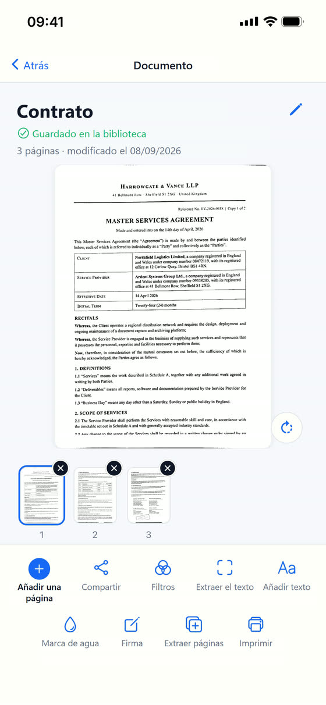

La misma página, tal como Scan Cam la devuelve.
Fotografiada arrugada sobre una mesa, y devuelta recta, blanca y nítida. Las dos páginas están enteras: no se recorta nada.


Todo lo que sabe hacer
Escanear
- Bordes detectados y página enderezada, aunque la fotografíes torcida
- Cuatro acabados: foto original, color, escala de grises y blanco y negro
- Intensidad ajustable con el dedo, con una vista previa que la sigue
- Sombras eliminadas con un toque, para las páginas fotografiadas bajo una lámpara o una mano
- Varias páginas en un mismo documento, para reordenar, girar o quitar
Ordenar
- Carpetas y subcarpetas, como en un ordenador
- Una búsqueda que encuentra también lo guardado en el fondo de una carpeta, y te dice dónde está
- Renombrar, mover, duplicar, eliminar
Terminar y compartir
- Exportar a PDF o JPEG
- Añadir texto sobre una página
- Imprimir directamente desde la aplicación
- Guardar en la app Archivos, o enviar por la ventana de compartir del iPhone
Nada sale de tu iPhone.
Y todo ocurre en tu teléfono. Sin cuenta que crear, sin nada que se envíe a un servidor, sin publicidad. Tus facturas, tus contratos y tus documentos de identidad nunca salen de tu iPhone, salvo el día en que decidas compartirlos tú mismo.
Scan Cam Pro
La versión gratuita es completa y no caduca: escanea, ordena, filtra, anota, imprime y exporta a PDF cuanto quieras. Los PDF gratuitos llevan al pie de página una pequeña mención «Escaneado con Scan Cam».
La suscripción Pro añade:
- El PDF sin ninguna mención
- El reconocimiento de texto, que lee tus páginas y te devuelve el texto para copiarlo
- La firma, dibujada con el dedo y colocada donde quieras
- La marca de agua, cruzada sobre la página
- La fusión de varios documentos en uno solo
- La extracción de páginas a un documento nuevo
- La exportación a Word (.docx) y a Excel (.xlsx)
El reconocimiento de texto funciona en el teléfono, sin internet: lee el alfabeto latino, el japonés y el chino.
24,99 € al año, tras 7 días de prueba gratuita.

¿Alguna pregunta?
Escríbeme: contesto yo mismo.
pierremunozfrance@gmail.com